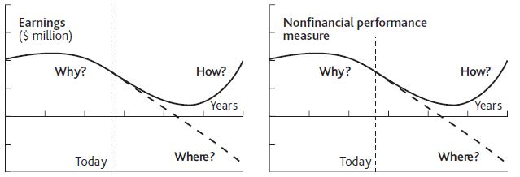

Given that the problem of managing performance through time is universal, it is astonishing that time charts like those in our exhibits are almost completely absent from business books and management literature. Try looking for yourself next time you find yourself in a business bookstore. So what tools do managers actually use to help them decide what to do?
A regular survey by one of the large strategy consulting firms identifies a long list of management tools (Bain & Company, 2007). However, few of these have won much confidence among managers, with the result that they come and go in popularity like fashions in clothing. The tools fall into several categories:
A wide-ranging study by another consulting company, McKinsey (Coyne & Subramaniam, 2000), found that there were few strategy tools with sound methodological foundations beyond the industry forces and value-chain approaches set out by Michael Porter in the early 1980s (Porter, 1980). The many qualitative methods available seemed to work well only in the hands of their developers and were limited in their ability to provide robust, fact-based analysis.
To understand the potential value of a sound approach to managing performance through time, it is useful to start by identifying the problems with current approaches to strategy.
Assessing an organization’s strengths, weaknesses, opportunities, and threats (SWOTA method of analyzing an organization's strengths, weaknesses, opportunities, and threats in order to evaluate the organization's strategy and formulate an appropriate action plan. ) is a method widely used by managers to evaluate their strategy. Unfortunately, it offers little help in answering the quantitative questions illustrated in Figure 1.1 "Alibaba.com Growth and Alternative Futures" and Figure 1.2 "Alternative Futures for Blockbuster Inc.". Typically, the concepts are ambiguous, qualitative, and fact-free. Discovering that we have the strength of great products and an opportunity for strong market growth offers us no help whatsoever in deciding what to do, when, and how much to bring about what rate of likely growth in profits.
Opportunities and threats are features of the external environment; as such, they are better dealt with by considering industry forces and political, economic, social, and technological (PEST) analysisAn analysis of an organization's opportunities and threats by considering industry forces and political, economic, social, and technological factors. (see Chapter 4 "Handling Interdependence Between Resources"). Strengths and weaknesses, on the other hand, center on the firm itself, so they are related to the resource-based view (RBV)An analysis of an organization's strengths and weaknesses by considering more intangible resources and the capabilities of the organization. of strategic management.
RBV writers generally devote attention to more intangible resources and the capabilities of organizations on the assumption that tangible factors are easy for competitors to copy and therefore cannot provide the basis for competitive advantage (Barney, 2006; Collis & Montgomery, 1994). Later chapters will show, however, that performance cannot be explained or improved without a strong understanding of how simple resources behave, both alone and in combination, and how they are controlled. Our two examples already illustrate common types of tangible and intangible factors that may need to be taken into account (Table 1.1 "Examples of Resources in Alibaba.com and Blockbuster Inc.").
The analysis of competitive conditions within an industry has dominated efforts to understand and develop firm performance. In summary, this approach says the following:
Table 1.1 Examples of Resources in Alibaba.com and Blockbuster Inc.
| Alibaba.com | Blockbuster Inc. |
|---|---|
| Buyers | Customers |
| Sellers | Stores |
| Range of Services | Range of DVDs |
| Web Site Pages | Franchises |
| Reputation Among Users | Reputation Among Consumers |
These five forcesAn analysis of five elements—buyers, suppliers, rivals, new entrants, and substitutes—in order to assess an industry's ability to sustain profitability through time.—buyers, suppliers, rivals, new entrants, and substitutes—thus explain something of industries’ ability to sustain profitability through time.
The impact of Netflix on Blockbuster is a classic example of the five forces at work, made possible by the increasing availability and usage of the Internet. The arrival of Netflix allowed consumers to switch to its lower price service from Blockbuster.
In other markets too, e-businesses can offer valuable products at very low cost by eliminating substantial costs associated with conventional supply chains, resulting in attractive profit margins. Buyers face few switching costs in taking up these alternatives. By getting very big very fast, the new providers establish buying power over their own suppliers and erect barriers against would-be rivals. The established suppliers are the substitutes, whose brick-and-mortar assets weigh them down and prevent them from competing in the new business model.
Unfortunately, the five forces framework also describes quite neatly why most such initiatives are doomed. Buyers who are able to switch to the new offering face very low barriers to switching among the host of hopeful new providers, and do so for the slightest financial incentive. The new business modelA plan put into action by an organization to create revenue and generate profits. is often transparent, requiring little investment in assets, so rivals and new entrants can quickly copy the offering. Worst of all, many enterprises see the same opportunity for the same high returns from the same business models, so there is a rush of new entrants. Anticipating hefty future profits, many give away more than the margin they ever expected to make, in the hope that, as the last survivor, they will be able to recapture margin in later years.
We saw the five forces at work again in the fiasco of the subprime lending boom of 2003–2007 that brought the world’s banking system to its knees. Someone spotted the opportunity to lend money for home purchases to people whose income levels or credit ratings were low. A fraction of these borrowers would likely default on these mortgages, but that was OK because the much higher interest that was charged to these borrowers would give sufficient income to cover those losses and more.
There was no way to keep this new business opportunity a secret, and nothing about it was hard for bank after bank to copy. New entrants to the market intensified competition, but in this case rivalry took the form not of lower prices but acceptance of increasingly risky customers. Ultimately, the total rate of defaults experienced by the subprime mortgage providers was not sufficiently covered by the high interest rates charged, and profitability collapsed. This whole sorry episode was made worse by banks’ packaging up of these toxic debts and selling them on to other institutions that did not appreciate the true risk, but fundamentally the whole edifice was built on appallingly bad strategic management.
At first glance, the industry forces viewA passive view of industry analysis that asserts that industries with powerful pressure from the five forces are less profitable where the forces are weaker. makes a lot of sense, and there is indeed some tendency for industries with powerful pressure from these five forces to be less profitable than others where the forces are weaker. The implication is somewhat fatalistic: If industry conditions dominate your likely performance, then once you have chosen your industry, your destiny is fixed. However, research has found that industry conditions explain only a small fraction of profitability differences between firms (McGahan & Porter, 1997). It turns out that factors to do with the business itself are far more important drivers of performance.
Management does matter: You can be successful in intensely competitive industries or unsuccessful in attractive industries. Moreover, the passive industry forces view takes no account of a firm’s ability to create the industry conditions that it wants. In essence, the world is the way it is today because Microsoft, Wal-Mart, Ryanair, and many other firms have made it like this, not because market growth and industry conditions have been handed down from on high.
The competitive forces viewIndustry analysis that focuses on the importance of barriers that prevent industry participants from entering, switching, exiting, and making other strategic moves. places great importance on the concept of barriers that prevent industry participants (the competitors themselves plus customers, suppliers, and others) from entering, switching, exiting, and making other strategic moves. This implies that these barriers are absolute obstacles: If you can clear them, you are “in”; if not, you are “out.” But business life is not like that. Many industries include small firms operating quite nicely with only a little of the necessary resources, while larger firms operate from a more substantial resource base. In fact, barriers to entry do not seem like barriers at all; they are more like hills. If you are a little way up these hills, you can participate to some degree, and the further up you are, the more strongly you can compete.
So why are strategy tools so weak at answering the basic question of what is driving performance through time? It turns out that most strategy research is based on analyzing possible explanations for profitability measures, such as return on sales or return on assets. Recently, more sophisticated and appropriate measures have been used, such as returns based on economic profitProfit minus the cost of capital required to deliver that profit. (profit minus the cost of capital required to deliver that profit). Typically, data are collected for large samples of firms and plausible explanations for performance differences among the sample are tested using statistical regression methods.
Such studies generate an estimate of how much of the variation in the profitability of different firms is explained by the suggested causes. These may be external factors such as competitive intensity, or internal factors such as technology or staff training. Unfortunately, today’s profitability ratios are a very poor guide to future earnings and of little interest to investors. Would you, for example, prefer to have $1,000 invested in a firm making 20% margins but with declining revenue or in another firm making 15% but doubling in size every year?
The last main criticism that can be leveled against existing strategy methods is that they have little to offer the large number of managers who run organizations that are not primarily concerned with making profits. Public services in many economies have been made quasi-commercial in recent years through privatization, outsourcing, and other structural changes. Nevertheless, substantial fractions of all developed economies are still accounted for by public services. Charities, NGOs, security services, and other organizations also have objectives to pursue and resources with which to pursue them.
Current strategy methods are of little help to such organizations, being almost exclusively built on economic analysis of competitive markets. Yet there is a remarkable similarity between the challenges faced by managers in business and nonbusiness settings (Figure 1.3 "Performance Questions in Commercial and Noncommercial Settings"). In all cases, they are expected to have sound answers to three key questions:
Figure 1.3 Performance Questions in Commercial and Noncommercial Settings
An example of the failure of conventional industry analysis—and a testament to the success of a resource-based approach pursued over time—is provided by Ryanair. This low-cost airline operates a business model similar to that of Southwest Airlines in the United States. Its success came at a time when the global airline industry faced increased costs combined with static or declining passenger numbers. There was sympathy for the comment from Richard Branson of Virgin that “the safest way to become a millionaire is to start as a billionaire and invest in the airline industry.”
Ryanair, like Southwest before it, and easyJet, another budget European operator, challenged the industry situation when it started offering short-haul flights from Ireland’s Dublin airport in 1995. The airline focused on creating an ultraefficient operating system, allowing fares way below existing levels in the market and maintaining high levels of customer satisfaction. So dramatic were the low levels of fares that awareness among the public increased rapidly.
Ryanair’s success built on the business model originally developed by Southwest, with one type of aircraft (Boeing 737), short-haul travel, no in-flight meals, and rapid turnaround times resulting in aircraft utilization up to 50% greater than the industry average. Ryanair took this approach further, avoiding travel agents, not issuing tickets, selling food and drink on the plane, and building sales through the Internet. These measures developed and reinforced the strategic priorities of efficiency, awareness, and customer satisfaction, and made the airline popular, distinctive, and successful in a fiercely competitive market.
In a sector where intense competitive forces have made the global industry endemically unprofitable for decades, Ryanair, easyJet, Southwest, and a few other determined players have managed to do very nicely indeed.